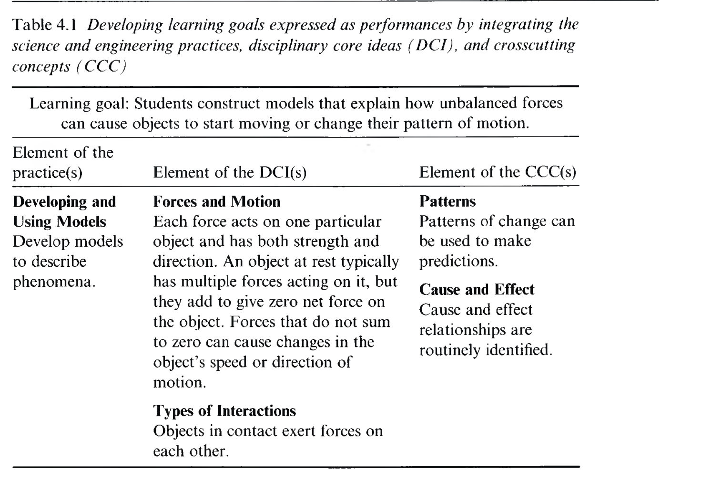
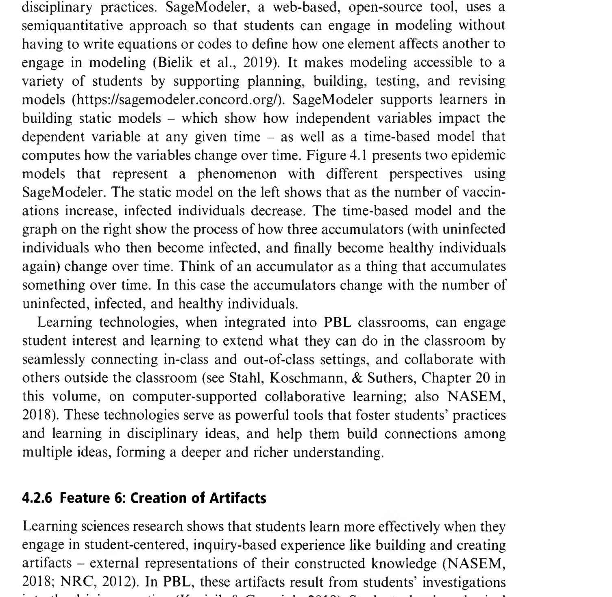

Project-Based Learning
프로젝트 기반 학습: 핵심 구동 질문, 3차원 학습, 그리고 실제 아티팩트 창조
👥 저자 및 출처
Joseph S. Krajcik (Michigan State University)
Namsoo Shin (Michigan State University)
『The Cambridge Handbook of the Learning Sciences』 (3rd Ed., 2022, pp. 72–92)
🎯 챕터 핵심 아젠다
- PBL의 본질: Hands-on을 넘어선 깊은 탐구(Minds-on)
- 4대 이론적 토대: 상황 학습, 구성주의, 사회적 상호작용, 마인드툴
- 6대 핵심 설계 특징: 구동 질문, 3D 학습, 실천, 협력, 도구, 아티팩트
- 대규모 실증 성과: IQWST, ML-PBL의 학업성취도 & 형평성 개선
🎯 강의 목표 및 핵심 맥락 (Context & Goal)
본 장은 프로젝트 기반 학습(PBL)이 단순한 활동 중심 수업(Hands-on)이 아니라, 학생 주도적으로 핵심 학술 개념과 학문적 실천을 심층 내면화하는 인지과학적 교수학습 모델임을 밝히고 6대 설계 원리를 정립합니다.
📖 원문 심층 학술 해설 (Detailed Academic Commentary)
조셉 크라첵과 신남수는 지난 30여 년간 미국 국립과학재단(NSF) 지원을 받아 개발된 대규모 PBL 교육과정(PBIS, IQWST, ML-PBL)의 실증 연구를 바탕으로, 구동 질문과 3차원 학습이 결합된 현대적 PBL 모델을 완성했습니다.
💡 수업/세미나 진행 팁 & 질문 가이드
"우리가 경험했던 프로젝트 수업 중 '단순 만들기'에 그쳤던 것과 '깊은 원리를 깨우쳤던' 것의 차이는 무엇이었는가?"라는 질문으로 시작하세요.
PBL의 정의: Hands-on을 넘어선 Minds-on 탐구
외형적 활동(Doing)과 이해를 동반한 탐구(Doing with Understanding)의 결정적 차이
🚫 피상적 프로젝트 수업의 함정
- 화려한 포스터 그리기, 단순 모형 조립에 치중
- 외형적 만들기(Hands-on)에만 매몰
- 핵심 개념적 원리와 학문적 추론의 실종
💡 학습과학 기반 현대적 PBL (Minds-on)
- 핵심 구동 질문(Driving Question) 중심의 장기 탐구
- 실세계 데이터 수집, 가설 검증, 과학적 모델링
- 교과의 핵심 아이디어와 학문적 실천의 깊은 내면화 (Barron et al., 1998)
🎯 강의 목표 및 핵심 맥락
학습과학 기반 PBL의 정의를 명확히 하고, 단순한 만들기 활동과 깊은 개념적 탐구(Doing with Understanding)를 대조합니다.
📖 원문 심층 학술 해설
블루멘펠드 등(Blumenfeld et al., 1991)과 배런 등(1998)은 학생들이 신체적으로 활동(Doing)한다고 해서 인지적으로 배우는 것은 아님을 경고했습니다. PBL의 성패는 학생의 인지적 관여(Minds-on)를 추동하는 설계에 달려 있습니다.
💡 수업/세미나 진행 팁 & 질문 가이드
프로젝트 수업에서 학생들이 '활동에는 열심이지만 원리는 모르는' 현상을 방지할 전략을 토론하세요.
프로젝트 기반 학습의 4대 이론적 기둥
지난 100년간 축적된 학습과학 및 교육심리학의 정수를 융합
🌍 1. 상황 학습 (Situated Learning)
Dewey; Brown et al.: 지식은 교과서 속 추상 기호가 아닌, 실세계의 진정한 맥락(Authentic Context) 속에서 탐구될 때 유연한 전이 발생
🧠 2. 능동적 지식 구성 (Active Construction)
Piaget; Constructivism: 수동적 수용이 아닌, 현상과 멘탈 모델 간의 불일치를 해결하는 능동적 의미 구성(Sensemaking)을 통해 개념 변화
👥 3. 사회적 상호작용 (Social Interaction)
Vygotsky; Scardamalia: 교실을 '지식 구축 공동체'로 변모시켜 책임 있는 대화(Accountable Talk)와 협력을 통해 집단 지성 창출
💻 4. 인지적 도구 (Cognitive Tools / Mindtools)
Salomon; Perkins: 테크놀로지는 단순 전달자가 아니라 작업기억 한계를 보완하고 복잡계를 시뮬레이션하는 사고의 확장 비계
🎯 강의 목표 및 핵심 맥락
PBL을 지탱하는 4대 이론적 토대(상황학습, 구성주의, 사회문화이론, 인지도구 이론)를 총괄 조망합니다.
📖 원문 심층 학술 해설
PBL은 어느 한 교육학자의 임의적 발상이 아닙니다. 듀이의 프래그머티즘, 피아제의 인지구성, 비고츠키의 사회적 담화, 살로몬의 인지도구 이론이 하나로 결합된 총체적 학습 생태계 모델입니다.
💡 수업/세미나 진행 팁 & 질문 가이드
4대 이론 중 현대 디지털 에듀테크와 가장 강력하게 결합하는 축이 무엇인지 논의해 보세요.
상황 학습과 능동적 의미 구성 (Sensemaking)
지역사회 실세계 문제와 직면하여 스스로 멘탈 모델을 재구성한다
🏞️ 실세계 맥락에의 착근 (Situated)
- "우리 마을 하천의 수질 오염 원인은 무엇인가?"
- 학생들의 삶과 연결된 실제적 문제 상황에 몰입
- 맥락화된 지식은 추상적 지식보다 망각되지 않고 높은 전이력 발휘
🧩 능동적 의미 구성 (Sensemaking)
- 새로운 데이터와 기존 오개념 간의 인지적 갈등 직면
- 가설 수립, 실험 설계, 데이터 대조를 통한 도식 재구성
- 스스로 해답을 찾아가는 주체적 개념 변화(Conceptual Change)
🎯 강의 목표 및 핵심 맥락
상황 학습(Situated Learning)과 능동적 의미 구성(Sensemaking)이 PBL에서 학습자의 인지 구조를 어떻게 변화시키는지 설명합니다.
📖 원문 심층 학술 해설
브라운 등(1989)이 지적하듯, 탈맥락적 개념은 실생활에서 활성화되지 않는 '불활성 지식'이 됩니다. PBL은 실제 환경 맥락 속에서 지속적 인지 갈등과 센스메이킹을 유도하여 살아있는 지식을 만듭니다.
💡 수업/세미나 진행 팁 & 질문 가이드
학생들이 실생활에서 겪는 생태/기술 문제를 수업의 도입 과제로 끌어들이는 방안을 모색하세요.
사회적 상호작용과 인지적 도구 (Mindtools)
지식 구축 공동체의 담화와 컴퓨터 시뮬레이션을 통한 인지 확장
🤝 지식 구축 공동체 (Scardamalia & Bereiter)
- 개별 학습자를 넘어 교실 전체가 하나의 탐구 팀으로 작동
- 책임 있는 대화(Accountable Talk)와 동료 피드백
- 아이디어의 공유, 비판적 검증, 집단적 지식 개선
💻 인지적 도구와 마인드툴 (Salomon et al.)
- 인간 두뇌의 작업기억 한계를 보완 (Cognitive Offloading)
- 복잡계 인과 관계를 시각적·동적으로 시뮬레이션
- 눈에 보이지 않는 미시·거시 현상을 가시적 아티팩트로 조작
🎯 강의 목표 및 핵심 맥락
사회적 상호작용(Social Interaction)과 마인드툴(Cognitive Tools)이 학습자의 고차원적 인지를 어떻게 증폭하는지 분석합니다.
📖 원문 심층 학술 해설
살로몬 등(1991)은 인간이 테크놀로지와 상호작용할 때 두뇌의 능력이 확장되는 '분산된 인지 파트너십(Partners in Cognition)'을 제안했습니다. 컴퓨터 시뮬레이션은 학생이 복잡한 시스템 사고를 할 수 있도록 돕는 인지적 지렛대입니다.
💡 수업/세미나 진행 팁 & 질문 가이드
학생들이 컴퓨터 시뮬레이션을 단순히 '게임'처럼 조작하지 않고 '사고의 도구'로 쓰게 하는 발문 기법을 토론하세요.
PBL 환경의 6대 핵심 설계 특징 (Krajcik & Shin)
성공적인 프로젝트 기반 학습을 설계하기 위한 필수 프레임워크
1. 핵심 구동 질문
Driving Question: 실세계 중심의 매력적이고 지속 가능한 탐구 나침반
2. 학습 목표에 집중
Focus on Goals: 교과 핵심 아이디어, 횡단 개념, 과학 실천의 3D 학습
3. 학문적 실천 참여
Disciplinary Practices: 과학자처럼 모델링, 데이터 분석, CER 논증 수행
4. 협력적 탐구
Collaborations: 소집단 협력 및 학급 전체의 합의(Consensus) 도출
5. 테크놀로지 도구
Technology Tools: 동적 시뮬레이션 및 데이터 시각화 인지 비계
6. 실제 아티팩트 제작
Creation of Artifacts: 반복적 정교화와 실제 청중 앞 공개 발표
🎯 강의 목표 및 핵심 맥락
크라첵과 신(Krajcik & Shin, 2022)이 정립한 PBL의 6대 핵심 설계 특징을 총괄 제시합니다.
📖 원문 심층 학술 해설
이 6대 특징은 독립된 요소가 아니라 하나의 유기적 시스템입니다. 구동 질문이 목표를 향해 나아가게 하고, 학문적 실천과 협력, 테크놀로지가 결합하여 최종 아티팩트로 결실을 맺습니다.
💡 수업/세미나 진행 팁 & 질문 가이드
6대 특징 중 현재 학교 수업에서 가장 결핍되기 쉬운 요소가 무엇인지 진단해 보세요.
핵심 구동 질문(Driving Question)의 5대 필수 조건
프로젝트 전체를 추동하며 학습자의 내적 동기를 유발하는 엔진
1. 실현 가능성 (Feasibility)
학생의 발달 수준과 학교 자원 내에서 실제로 데이터 수집 및 해결 가능
2. 학문적 가치 (Worth)
교육과정 표준 및 교과의 핵심 학술 개념을 필연적으로 학습하게 유도
3. 맥락성 (Contextualization)
학생들의 일상생활, 지역사회 환경과 밀접하게 연계된 실세계 쟁점
4. 유의미성 (Meaningfulness)
학생들에게 "정말 알고 싶다"는 지적 호기심과 내적 흥미를 강력히 촉발
5. 지속성 (Sustainability)
단답형이 아니며, 수 주~수 개월에 걸쳐 수많은 **하위 질문(Sub-questions)**을 파생시키며 탐구를 확장
🎯 강의 목표 및 핵심 맥락
PBL의 성패를 가르는 핵심 구동 질문(Driving Question)의 5대 평가 기준을 정립합니다.
📖 원문 심층 학술 해설
크라첵 등(2008)은 구동 질문이 너무 광범위하면 방향을 잃고, 너무 좁으면 단순 암기 퀴즈가 된다고 지적합니다. 5대 기준을 충족하는 질문만이 학생들의 자발적 탐구를 수개월간 지속시킵니다.
💡 수업/세미나 진행 팁 & 질문 가이드
"물은 왜 100도에서 끓는가?"(단순 질문)를 5대 기준에 맞는 구동 질문으로 재구성해 보세요.
구동 질문의 구체적 설계와 하위 질문 분해
거대한 메인 질문을 탐구 가능한 단계적 하위 질문으로 구조화
🎯 메인 구동 질문 (Main Question)
"우리 동네 하천의 물고기는 왜 사라졌으며, 어떻게 되살릴 수 있을까?"
- 환경 오염, 생태계 먹이사슬, 수질 화학이 융합된 실세계 과제
- 지역사회 환경청 및 주민과의 연계 가능성
🌿 파생되는 하위 질문들 (Sub-questions)
- 하위 질문 1: 하천 물속의 용존산소량과 pH는 정상인가? (화학)
- 하위 질문 2: 물고기의 주요 먹이인 플랑크톤은 왜 줄었는가? (생태)
- 하위 질문 3: 상류 공장의 폐수는 수질에 어떤 영향을 주는가? (시스템)
- 하위 질문 4: 하천 정화를 위해 어떤 인공습지를 설계할 것인가? (공학)
🎯 강의 목표 및 핵심 맥락
훌륭한 메인 구동 질문이 어떻게 다학제적 하위 질문들(Sub-questions)로 분해되어 체계적 탐구로 이어지는지 예시를 통해 분석합니다.
📖 원문 심층 학술 해설
학생들은 처음에는 큰 질문에 압도되지만, 교사와 함께 하위 질문들을 도출하고 질문 맵(Question Map)을 벽면에 게시하면서 단계별 탐구 로드맵을 스스로 완성해 나갑니다.
💡 수업/세미나 진행 팁 & 질문 가이드
여러분의 전공 교과에서 한 학기 동안 탐구할 수 있는 '최고의 구동 질문'을 하나씩 만들어 보세요.
학습 목표에의 집중: NGSS 3차원 학습 (3D Learning)
단순 사실 암기를 넘어선 핵심 아이디어, 횡단 개념, 과학 실천의 삼위일체
1. 교과 핵심 아이디어
DCI (Core Ideas): 학문의 근간을 이루는 기본 개념 (예: 생태계 에너지 흐름, 유전과 변이, 분자 운동론)
2. 횡단 개념
CCC (Crosscutting): 모든 과학 분야를 관통하는 통합 렌즈 (예: 패턴, 인과 관계, 시스템 모델, 에너지 순환)
3. 과학·공학 실천
SEP (Practices): 지식을 생성하고 적용하는 실천 행위 (예: 모델 개발, 데이터 해석, CER 논증, 엔지니어링 설계)
🎯 강의 목표 및 핵심 맥락
미국 국립연구위원회(NRC, 2012)와 차세대 과학교육 표준(NGSS)이 제시한 '3차원 학습(3D Learning)'의 구조를 설명합니다.
📖 원문 심층 학술 해설
크라첵(Krajcik)은 NGSS 개발위원장으로서 PBL이 3차원 학습을 구현하는 가장 완벽한 교수법임을 입증했습니다. 지식(DCI)과 사고의 틀(CCC), 그리고 탐구 행동(SEP)이 하나로 결합될 때 비로소 진정한 과학적 역량이 길러집니다.
💡 수업/세미나 진행 팁 & 질문 가이드
수업 지도안을 작성할 때 DCI, CCC, SEP 3요소가 모두 반영되어 있는지 점검하는 방법을 설명하세요.
3차원 학습 기반 수행 기대 목표 개발 (Table 4.1)
실천(SEP) + 핵심 아이디어(DCI) + 횡단 개념(CCC)의 통합 설계 분석
| 3차원 구성 요소 | 구체적 학습 목표 요소 |
|---|---|
| 과학·공학 실천 (SEP) | [모델 개발 및 사용] 시스템 메커니즘을 예측·설명하는 모델 구축 |
| 교과 핵심 아이디어 (DCI) | [MS-LS2.A] 유기체 간 상호작용 및 자원 경쟁 [MS-LS2.C] 생태계 역동성과 회복탄력성 |
| 횡단 개념 (CCC) | [시스템과 모델] 구성 요소 간 피드백 루프 [인과 관계] 원인과 결과의 메커니즘 규명 |
| 🎯 통합 수행 기대 목표 | "학생들은 외래종 유입이 토착 개체군과 자원 순환에 미치는 영향을 예측·설명하기 위해 생태계 모델을 개발·활용한다." |

🎯 강의 목표 및 핵심 맥락
원서 Table 4.1을 통해 3차원 학습 요소들이 어떻게 단일한 '수행 기대 학습 목표(Learning Goal as Performance)'로 통합되는지 분석합니다.
📖 원문 심층 학술 해설
밀러와 크라첵(Miller & Krajcik, 2019)은 "생태계를 안다"는 식의 모호한 목표 대신, "외래종 영향을 설명하기 위해 모델을 개발하고 활용한다"처럼 실천과 개념이 융합된 행동 목표를 설정해야 함을 강조합니다.
💡 수업/세미나 진행 팁 & 질문 가이드
슬라이드의 표를 보며 다른 교과(예: 물리, 화학, 정보)의 3차원 수행 기대 목표를 함께 작성해 보세요.
학문적 실천 참여: 주장-증거-추론(CER) 논증
전문 과학자처럼 데이터를 해석하고 증거 기반으로 설득하는 실천
📢 1. 주장 (Claim)
탐구 질문에 대한 직접적이고 명확한 결론적 답변 제시
"하천의 물고기는 공장 폐수의 산성 물질 때문에 폐사했다."
📊 2. 증거 (Evidence)
주장을 뒷받침하는 과학적 데이터 (수치, 관찰 기록, 측정치)
"폐수 배출구 부근의 pH가 4.2로 급락했고, 핀치 개체수가 80% 감소함."
🧠 3. 추론 (Reasoning)
증거가 왜 그 주장을 입증하는지 과학적 원리와 연결하는 논리적 설명
"강산성 환경에서는 아가미 세포 단백질이 변성되어 호흡이 불가능하기 때문."
🎯 강의 목표 및 핵심 맥락
과학적 탐구의 핵심 실천인 CER(Claim-Evidence-Reasoning) 프레임워크의 구조와 교육적 중요성을 규명합니다.
📖 원문 심층 학술 해설
맥닐과 크라첵(McNeill & Krajcik, 2012)의 연구는 학생들이 '주장'은 쉽게 말하지만, 적절한 '증거'를 선별하고 이를 과학적 원리로 잇는 '추론'을 매우 어려워함을 밝혔습니다. CER 비계는 과학적 사고력을 극적으로 신장시킵니다.
💡 수업/세미나 진행 팁 & 질문 가이드
학생들의 보고서에서 '단순 의견'과 'CER 기반 과학적 논증'을 판별하는 채점 기준(Rubric)을 논의하세요.
협력적 탐구 공동체와 책임 있는 대화
소집단 분업을 넘어 전체 학급이 하나의 지식 구축 생태계로 진화
🗣️ 책임 있는 대화 (Accountable Talk)
- 학습 공동체에 대한 책임: 동료의 발언 경청 및 존중
- 엄밀한 지식에 대한 책임: 정확한 사실과 데이터 요구
- 논리적 추론 표준에 대한 책임: 타당한 근거 기반 논증
🏛️ 학급 전체의 합의 도출 (Consensus Building)
- 모둠별로 수집한 상이한 데이터와 가설 공유
- 불일치와 모순에 대한 학급 전체 토론
- 공동의 과학적 설명 모델 합의 및 지식 벽면(Summary Board) 구축
🎯 강의 목표 및 핵심 맥락
PBL에서 협력(Collaboration)이 단순한 역할 분담이 아니라 지식 구축 공동체(Knowledge-Building Community)로 작동하는 방식을 설명합니다.
📖 원문 심층 학술 해설
스카다말리아와 베라이터(2006)가 강조하듯, 협력의 목적은 '과제 끝내기'가 아니라 '아이디어의 집단적 개선(Idea Improvement)'입니다. 전체 학급 토론을 통해 개별 모둠의 지식이 학급 전체의 공공 지식으로 격상됩니다.
💡 수업/세미나 진행 팁 & 질문 가이드
모둠 활동 후 전체 학급이 합의(Consensus)에 도달하도록 교사가 이끄는 퍼실리테이션 질문을 연습해 보세요.
테크놀로지 도구와 시스템 다이내믹스 모델링
복잡계 현상의 인과 관계를 시각적·동적으로 시뮬레이션하는 마인드툴
🔄 SageModeler 시스템 모델링
- 복잡한 수학 미분 방정식 없이 정성적 노드-화살표 연결
- 변수 간 양(+)의 상관 및 음(-)의 피드백 루프 설정
- 가상 시뮬레이션을 돌려 시간에 따른 시스템 변화율 관찰
🌐 NetLogo 에이전트 기반 모델링
- 수천 마리 개체(에이전트)의 미시적 상호작용 시뮬레이션
- 미시 규칙이 거시적 창발 패턴(Emergence)을 낳는 과정 체험
- 가설에 따라 파라미터를 조작하며 즉각적 시각 피드백 획득
🎯 강의 목표 및 핵심 맥락
SageModeler와 NetLogo 등 시스템 모델링 소프트웨어가 학생들의 고차원적 시스템 사고를 어떻게 지원하는지 설명합니다.
📖 원문 심층 학술 해설
기후 변화나 감염병 확산 같은 복잡계 문제는 단순 선형적 사고로 이해할 수 없습니다. 테크놀로지 모델링 도구는 학생들이 변수 간의 비선형적 피드백과 지연 효과(Delay)를 직관적으로 탐구할 수 있게 돕습니다.
💡 수업/세미나 진행 팁 & 질문 가이드
학생들이 직접 모델을 만들어 보고 실제 관찰 데이터와 대조하는 과정의 인지적 효과를 토론하세요.
동일 시뮬레이션의 다중 시각적 표상 (Figure 4.1)
에이전트 기반 미시 표상 vs 시스템 다이내믹스 거시 표상의 상호 보완성
🔍 다중 표상(Multiple Representations)의 가치
- 에이전트 모델 (NetLogo): 개별 개체의 이동과 감염 접촉을 보여주어 직관적 메커니즘 파악 용이
- 시스템 모델 (SageModeler): 감염률, 회복률 등 거시 변수 간의 동적 피드백과 시간별 누적 곡선 파악
- ➔ 두 표상을 교차 비교할 때 가장 완전한 시스템 멘탈 모델 형성

🎯 강의 목표 및 핵심 맥락
원서 Figure 4.1을 통해 동일한 감염병 확산 현상을 에이전트 기반 표상과 시스템 다이내믹스 표상으로 상호 보완적으로 학습하는 원리를 제시합니다.
📖 원문 심층 학술 해설
에인스워스(Ainsworth, 2006)가 밝혔듯, 다중 표상은 한 표상의 단점을 다른 표상이 보완하는 상호보완적 역할을 합니다. 학생들은 미시적 개체 상호작용과 거시적 통계 곡선을 연결하며 심층 개념을 구축합니다.
💡 수업/세미나 진행 팁 & 질문 가이드
코로나19 팬데믹 당시 대중에게 제공되었던 시각화 그래프들의 장단점을 다중 표상 관점에서 평가해 보세요.
실제 아티팩트 제작과 반복적 정교화
초안 작성, 동료 비평(Critique), 그리고 엔지니어링 수정 순환 (Refinement)
📦 공유 가능한 아티팩트 (Artifacts)
- 학생들의 깊은 이해를 구체화한 실제적 산출물
- 작동하는 소프트웨어, 생태 정책 제안서, 과학 전시 모형
- 사고를 눈에 보이게 외재화(Articulation)하는 물리적 매개체
🔄 반복적 정교화 (Iterative Refinement)
- 1차 초안(Draft) 제작 ➔ 동료 및 교사 비평(Critique)
- 피드백을 반영한 수정 및 재검증(Revision)
- 전문가 엔지니어링 설계 프로세스와 동일한 나선형 발전
🎯 강의 목표 및 핵심 맥락
PBL의 핵심 산출물인 아티팩트(Artifacts)의 정의와 반복적 정교화(Iterative Refinement)의 엔지니어링 순환을 설명합니다.
📖 원문 심층 학술 해설
아티팩트는 '마지막 날 한 번 내고 끝나는 숙제'가 아닙니다. 프로젝트 초기부터 끊임없이 수정되고 업그레이드되는 지적 진화의 궤적(Trajectory)입니다. 동료 비평은 메타인지적 반성을 강제합니다.
💡 수업/세미나 진행 팁 & 질문 가이드
동료 피드백을 감정적 비난이 아닌 건설적인 '배려 깊은 비평(Kind, Specific, Helpful Critique)'으로 이끄는 가이드라인을 제시하세요.
실제 청중(Authentic Audience) 앞 공개 발표와 평가
교실 벽을 넘어 지역사회와 소통하는 지적 자긍심과 책임감
👥 실제 청중 (Authentic Audience)
- 교사 혼자 채점하고 버리는 평가의 한계 극복
- 학부모, 지역사회 주민, 과학 전문가, 환경청 공무원 초청
- 자신의 연구가 실제 세상에 기여한다는 높은 책임감과 자긍심
📊 다차원 수행 평가 (Performance Assessment)
- 선다형 지필 시험을 넘어선 루브릭(Rubric) 기반 다면 평가
- 개념적 깊이, 논증의 타당성, 모델의 정밀도, 질의응답 대응력
- 성찰 일지(Reflection Journal)를 통한 자기 평가 병행
🎯 강의 목표 및 핵심 맥락
실제 청중(Authentic Audience)을 향한 공개 전시회(Exhibition)가 학생의 학습 동기와 학업 완성도에 미치는 영향을 규명합니다.
📖 원문 심층 학술 해설
청중이 교실 밖 실제 인물로 확장될 때 학생들의 몰입도는 극적으로 상승합니다. 전문 과학자의 질문에 답변하면서 학생은 자신이 진정한 탐구자 공동체의 일원이라는 정체성(Identity)을 형성합니다.
💡 수업/세미나 진행 팁 & 질문 가이드
학기 말 프로젝트 발표회에 학부모와 전문가를 초청하여 운영하는 실천적 팁을 공유하세요.
학습과학 기반 대규모 PBL 커리큘럼 프로젝트
수만 명의 학생을 대상으로 20여 년간 검증된 국가적 교육과정 혁신
🔬 PBIS (Kolodner et al.)
중학교 과학 탐구 커리큘럼: "공학 설계와 과학적 탐구의 융합 모델 구축"
🌐 IQWST (Krajcik et al.)
6~8학년 대상 3차원 과학 탐구: "질문과 탐구를 통한 우리 세상의 과학적 규명"
📚 ML-PBL (Krajcik et al.)
초등 3~5학년 대상: "다중 문해력(읽기·쓰기·수학·과학) 통합 프로젝트"
🎯 강의 목표 및 핵심 맥락
학습과학의 대표적 대규모 PBL 교육과정인 PBIS, IQWST, ML-PBL의 개발 배경과 구조를 소개합니다.
📖 원문 심층 학술 해설
이 교육과정들은 실험실 단위의 소규모 연구가 아니라, 미국 전역의 다양한 학군(도시, 농촌, 다문화 지역)에 대규모로 보급되어 엄밀한 무작위 통제 실험(RCT)을 통해 효과가 검증되었습니다.
💡 수업/세미나 진행 팁 & 질문 가이드
국가 교육과정과 PBL 교재가 어떻게 긴밀하게 연계될 수 있는지 분석해 보세요.
실증 연구: 표준화 성적 우위와 성취도 격차 축소
무작위 통제 실험(RCT)이 증명한 PBL의 학업 성취 및 형평성 혁신
📈 1. 표준화 시험 성적의 압도적 우위
- 전통 주입식 통제 집단 대비 주 표준화 과학 시험에서 **통계적으로 유의미하게 높은 성취도** 달성
- (Schneider et al., 2016, 2020; Krajcik et al., 2021)
- "PBL을 하면 기초 지식이 부족해 시험을 못 본다"는 통념을 완전 반증
⚖️ 2. 소외 계층 성취도 격차 대폭 축소
- 소수 인종, 저소득층, 다문화 학생군에서 성적 향상 폭이 가장 크게 나타남
- 구조화된 비계와 실제적 맥락이 학습 장벽을 제거
- 교육 형평성(Equity)과 사회 정의를 실현하는 강력한 도구
🎯 강의 목표 및 핵심 맥락
대규모 RCT 실증 연구 데이터를 바탕으로 PBL이 표준화 시험 성적 향상과 교육 격차 축소에 기여함을 설명합니다.
📖 원문 심층 학술 해설
슈나이더 등(Schneider et al., 2020)의 연구는 PBL 수업을 받은 학생들이 단순 암기 문항뿐 아니라 고난도 추론 문항에서 비교 집단을 압도함을 입증했습니다. 특히 취약 계층 아동에게서 가장 큰 효과가 나타났습니다.
💡 수업/세미나 진행 팁 & 질문 가이드
"PBL은 성적이 좋은 학생들만을 위한 수업이다"라는 편견을 이 실증 연구 데이터를 통해 반박해 보세요.
실증 연구: 장기 기억 파지, 전이, 사회정서적 성장
1~2년 후에도 유지되는 개념 모델과 미래 이공계 진로 효능감의 비약적 상승
🧠 3. 장기 기억 파지와 유연한 전이 (Far Transfer)
- 시험 후 급속히 망각하는 전통 수업과 달리, **1~2년 후 추적 검사에서도 핵심 개념 모델 유지**
- 새롭고 낯선 실세계 문제에 배운 원리를 적응적으로 전이
💖 4. 사회정서적 역량과 이공계 효능감
- 과학에 대한 지적 호기심과 몰입도(Optimal Learning Moments) 급증
- 협력적 문제 해결 효능감 및 회복탄력성 향상
- 미래 과학·공학 분야 진로 희망률 대폭 상승
🎯 강의 목표 및 핵심 맥락
PBL이 장기 기억 파지(Retention), 지식 전이(Transfer), 그리고 사회정서적 동기(Social-Emotional)에 미치는 장기적 효과를 제시합니다.
📖 원문 심층 학술 해설
슈나이더와 크라첵(2016)의 한-미-핀란드 비교 연구는 PBL 환경에서 학생들이 '도전과 역량이 일치하는 최적의 학습 순간(Optimal Learning Moments)'을 가장 빈번하게 경험함을 밝혔습니다.
💡 수업/세미나 진행 팁 & 질문 가이드
PBL이 학생들의 '과학자로서의 정체성(Science Identity)' 형성에 어떻게 기여하는지 토론하세요.
미래 교실의 전환과 지속 가능한 시스템 지원
교사 전문성 개발(PD)과 3차원 수행 평가 체제로의 총체적 전환
1. 교실 생태계의 전환
교사 중심 정답 주입에서 교사와 학생이 함께 탐구하는 '협력적 탐구 공동체'로 진화
2. 지속적 교사 PD 지원
PBL 퍼실리테이션 역량을 신장시키는 대학-교육청의 장기 코칭 및 전문 학습 공동체(PLC)
3. 평가 체제의 정합성
단편적 선다형 시험을 탈피하여 학생의 사고 과정을 측정하는 3차원 수행 평가 구축
🎯 강의 목표 및 핵심 맥락
PBL이 학교 현장에 지속 가능하게 안착하기 위해 필요한 교사 전문성 개발(PD)과 교육 정책 지원을 논의합니다.
📖 원문 심층 학술 해설
크라첵과 신은 PBL이 성공하려면 교재만 바꾸어서는 안 되며, 교사의 전문성 지원과 평가 제도가 함께 바뀌는 시스템적 개혁(Systemic Alignment)이 필수적임을 역설합니다.
💡 수업/세미나 진행 팁 & 질문 가이드
우리 학교 환경에서 PBL을 성공적으로 도입하기 위해 가장 시급한 제도적 지원은 무엇일까요?
프로젝트 기반 학습의 궁극적 비전
모든 학습자를 능동적인 탐구자이자 창의적인 문제 해결자로
구동 질문 중심 탐구
실세계와 연결된 매력적인 질문을 통해 학습자의 내적 동기를 지속적 촉진
3D 학습과 학문적 실천
핵심 개념과 횡단 렌즈를 바탕으로 과학자처럼 모델링하고 CER 논증 수행
실제 아티팩트 창조
테크놀로지와 협력을 통해 반복 정교화된 결과물을 실제 청중 앞에 당당히 발표
🎯 강의 목표 및 핵심 맥락
Chapter 04의 모든 핵심 논점을 요약하고 21세기 미래 교육을 이끄는 PBL의 비전을 확립합니다.
📖 원문 심층 학술 해설
PBL은 단순한 교수법 중 하나가 아니라, 학습과학이 지향하는 모든 가치(깊은 학습, 상황성, 구성주의, 협력, 에듀테크 비계, 사회 정의)가 한곳에 집약된 가장 완성도 높은 교육 실천 모델입니다.
💡 수업/세미나 진행 팁 & 질문 가이드
"오늘 배운 PBL 6대 설계 원리를 여러분의 다음 수업 기획에 어떻게 적용하시겠습니까?"를 마지막 질문으로 제시하세요.